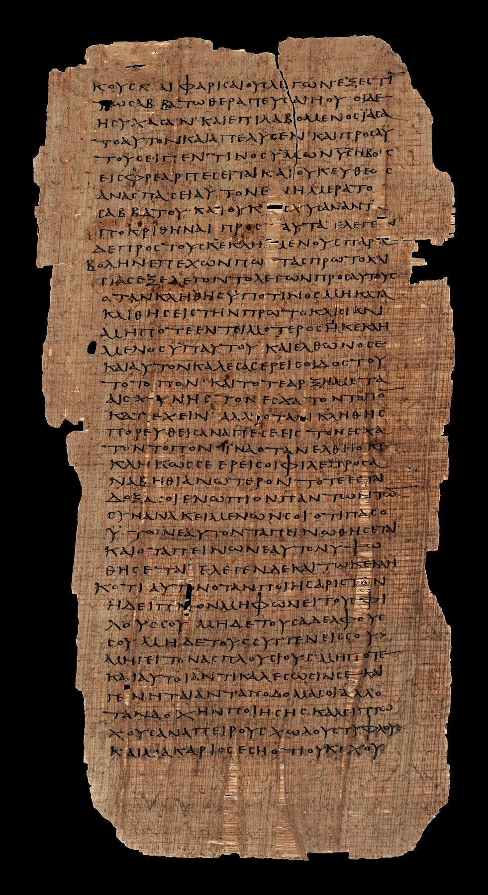

Bodmer Papyrus P75

- Find Name
- Bodmer Papyrus P75
- Description
- Bodmer Papyrus P75 (P. Bodmer XIV-XV, now Hanna Papyrus 1) is an early Greek codex containing most of Luke and the beginning of John, found in the 1950s at Pabau in Egypt. Traditionally dated to about AD 175-225, though some recent studies argue for the late 3rd to early 4th century, it originally had about 144 pages, of which 102 survive. It was formerly in the Bodmer Library at Cologny and was presented to Pope Benedict XVI in 2007 by Frank Hanna; it is now in the Vatican Library, Rome.
- Historical Period
- Early Church period
- Evidence Class
- Direct
- Interpretations
- P75 is often called the most significant New Testament papyrus discovered, because its text agrees with the 4th-century Codex Vaticanus almost exactly, vindicating the antiquity of the Vaticanus text-type a century before that codex was copied. It contains the oldest known copy of the Lord's Prayer in Luke and, like P66, omits the adulteress passage (John 7:53-8:11). Its combination of Luke and John in a single codex, with John beginning on the same page where Luke ends, shows the Gospels circulating together as a collection in early Egyptian Christianity.
- Alternative Names
- P. Bodmer XIV-XV; Hanna Papyrus 1
- Related Places
- Related Books
- Related People
- Scripture Illuminated
- Biblical Significance
- Its near-identity with Codex Vaticanus proves the Vaticanus text of Luke and John already existed a century earlier, and it holds the oldest copy of Luke's Lord's Prayer.
- Artifact Date
- c. AD 175-225
- Current Location
- Vatican Library, Rome
- Date Discovered
- 1950s
- Discovery Location
- Pabau, Egypt
- Timeline Era
- Early Church
Awaiting Review Not yet checked against scholarly sources. Treat its claims as provisional until this entry is reviewed. About verification
Last reviewed: not yet reviewed